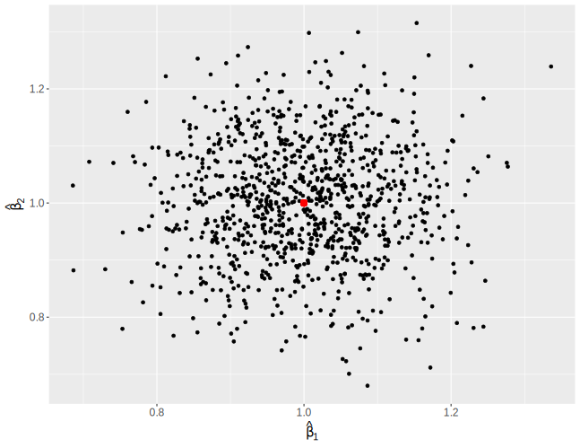
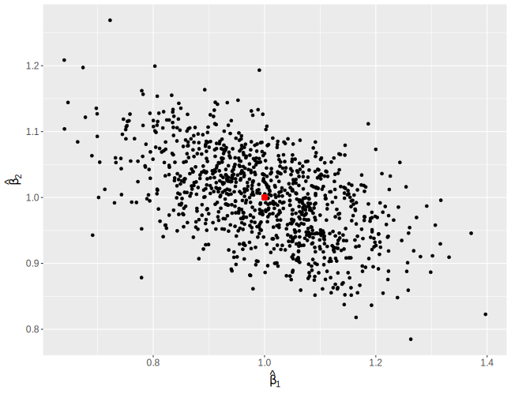
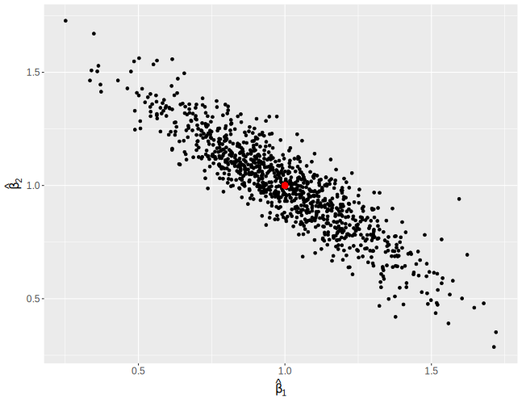
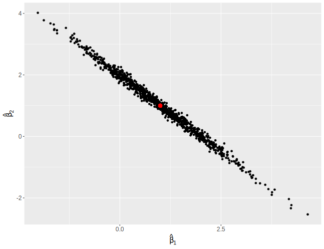

While there are many resources out there to describe the issues arising with multicollinearity in independent variables, there’s a visualization for the problem that I came across in a book once and haven’t found replicated online. This replicates the visualization.
Let \(Y\) be a response and \(X_1\) and \(X_2\) be the predictors, such that
\[ Y_i = \beta_0 + \beta_1X_{1i} + \beta_2X_{2i} + \epsilon_i \]for individual \(i\).
For simplicity, let’s say that
\[ \beta_0 = 0,\\ \beta_1 = 1,\\ \beta_2 = 1. \]I carry out a simulation by generating 1,000 simulations with a given correlation between predictors and obtain their coefficients.
reps <- 1000 n <- 100 save <- matrix(nrow = reps, ncol = 3) for (i in 1:reps) { x1 <- rnorm(n) x2 <- rnorm(n) y <- x1 + x2 + rnorm(n) mod <- lm(y ~ x1 + x2) save[i, ] <- c(coef(mod)[-1], cor(x1, x2)) }
The line x2 <- rnorm(n) gets replaced with x2
<- x1 + rnorm(n, sd = _), where the _ is replaced
with difference values to induce more correlation
between x1 and x2.
Following these simulations, the coefficients are plotted against each out.
The average correlation between \(X_1\) and \(X_2\) is 0.002.
The red dot represents the true coefficients. We see no relationship between the estimated coefficients, and each are well centered around the truth.
The average correlation between \(X_1\) and \(X_2\) is 0.553.
While there is some semblance of a relationship, it is not very strong.
The average correlation between \(X_1\) and \(X_2\) is 0.893.
There’s a strong relationship now, such that if one coefficient is incorrectly high, the other is incorrectly low.
The average correlation between \(X_1\) and \(X_2\) is 0.995.
We now see a very strong relationship between the coefficients.
Consider the “extremely high correlation” results. With such high correlation, essentially \(X_1 = X_2\), which is represented by the red line (slope of -1). We can approximate our model:
\[ \begin{aligned} Y_i &= \beta_0 + \beta_1X_{1i} + \beta_2X_{2i} + \epsilon_i\\ &\approx \beta_0 + (\beta_1 + \beta_2)X_{1i} + \epsilon_i\\ &\approx \beta_0 + (\beta_1 + \beta_2)X_{2i} + \epsilon_i \end{aligned} \]In other words, the model has that \(\beta_1 + \beta_2 = 2\) (since we assumed above that both coefficients have values of 1.. So while all of those models would have the same predictive power for \(Y\), they would have drastically different interpretations depending on where along that red line they fall.